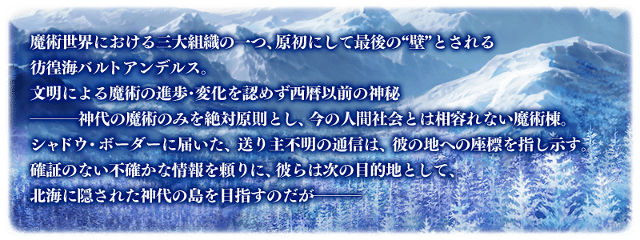

魔術世界中的三大組織之一，被視為原初同時也是最後之“壁”
彷徨海巴爾多安狄爾斯(Barthandelus)。
不認可文明帶來的進步･變化，僅以西元前的神秘
ーーー神代的魔術為絕對原則，無法與現今人類社會相容的魔法棟。
發送者不明的通訊傳送到虛數潛航艇(Shadow Border)，指示著前往該處的座標。
依靠未經證實的不確定情報，做為他們的下個目的地
目標為隱身北海的神代之島，但ーーー

◆公開時間◆
預定2018年7月中旬
◆第2部 第2章「Lostbelt No.2 無間冰焰世紀 諸神的黃昏 不滅之火的好漢」預定開幕◆
「無間冰焰世紀 諸神的黃昏 不滅之火的好漢」的舞台是做為第2異聞帶的北歐。
自雪和火焰覆蓋山嶺的世界繼續開始故事。
◆開放條件◆
通過第2部 第1章「Lostbelt No.1 永久凍土帝國 安娜塔西亞 獸國的皇女」後開放。
※不需要通過亞種特異點(從Ⅰ到Ⅳ)。
預定自2018年7月18日(三) 20:00在niconico生放送播送發表關於「Lostbelt No.2 無間冰焰世紀 諸神的黃昏 不滅之火的好漢」最新情報等的特別節目。
詳情請在此處公告確認。